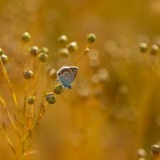
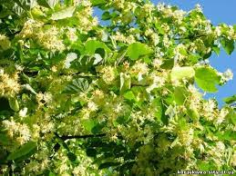
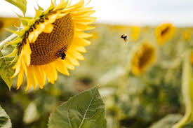

А коли розквітнуть липи
посеред твого двора,
значить – це надходить Липень,
найпахучіша пора.
Цілий день клопочуть бджоли,
з лип узяток беручи.
Медом пахне все навколо,
матіолою – вночі.
Глянь: уже в полях навкружних
починаються жнива.
Дітвора, весела й дружна,
в таборах відпочива.
І назавжди теплу згадку
збереже про табори:
про походи, і палатки,
й біля вогнищ вечори.
Підставляй під сонце тіло,
не ховайсь від спеки в тінь,
набирайся в Липні сили,
загартуйся й відпочинь!